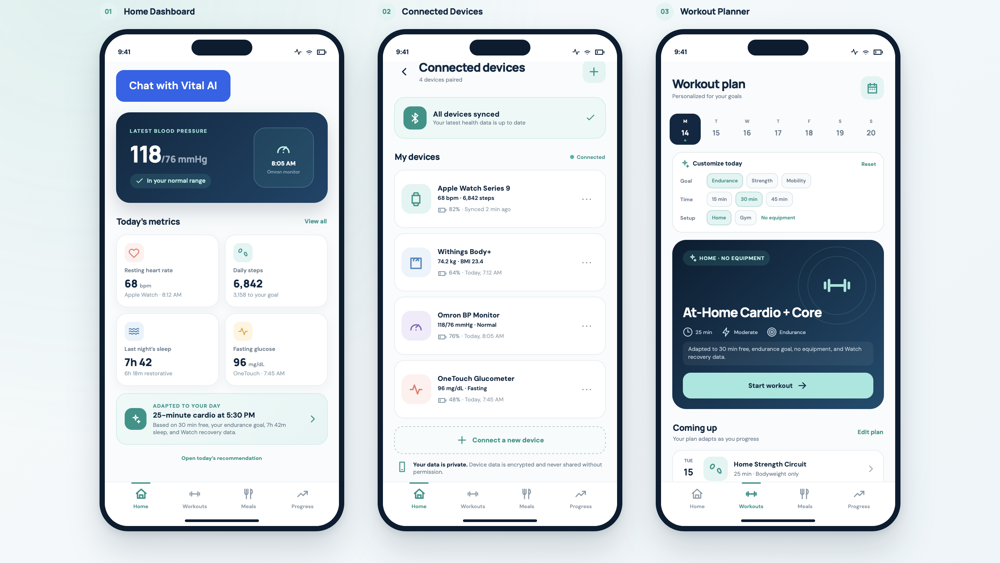
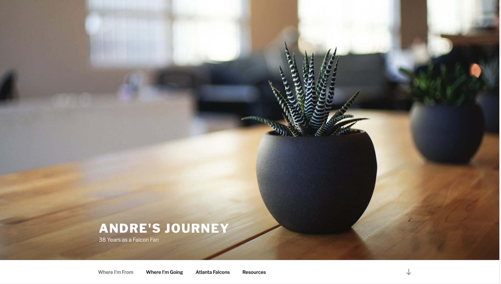
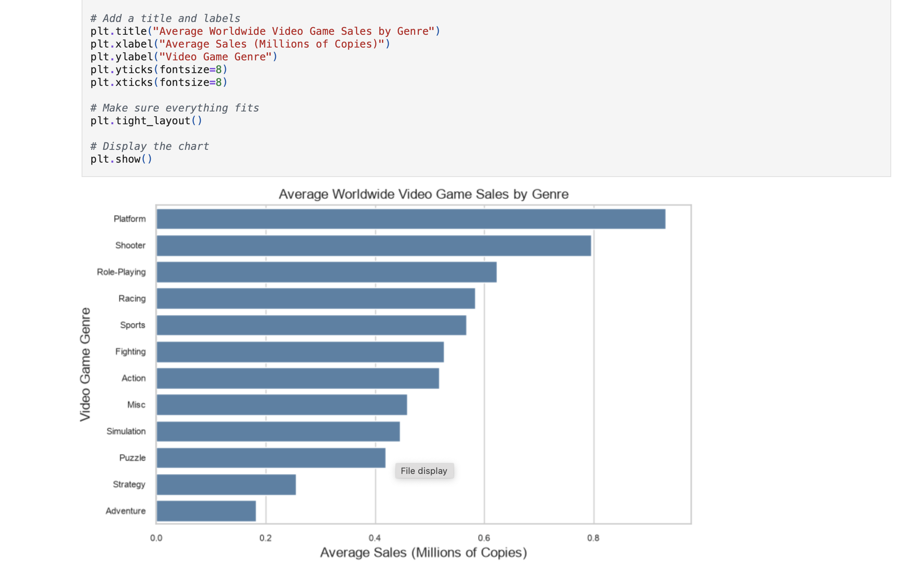
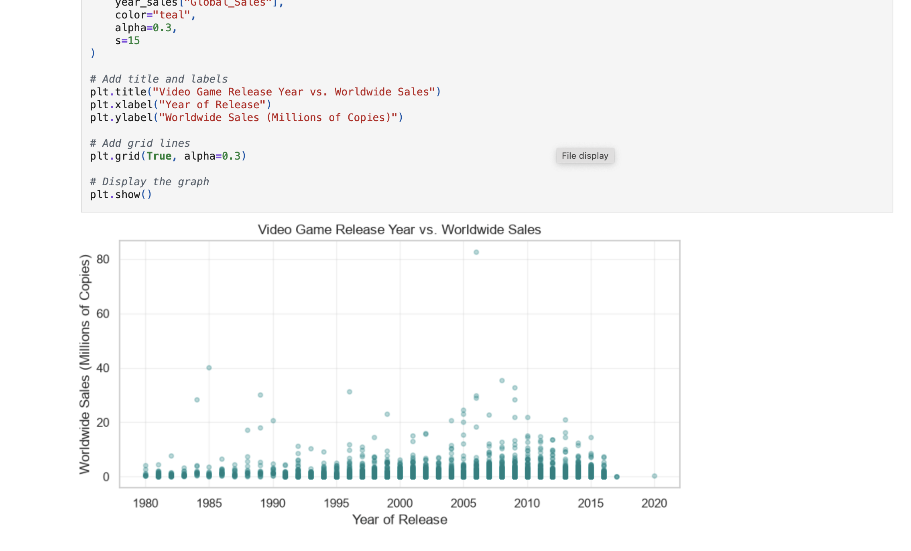
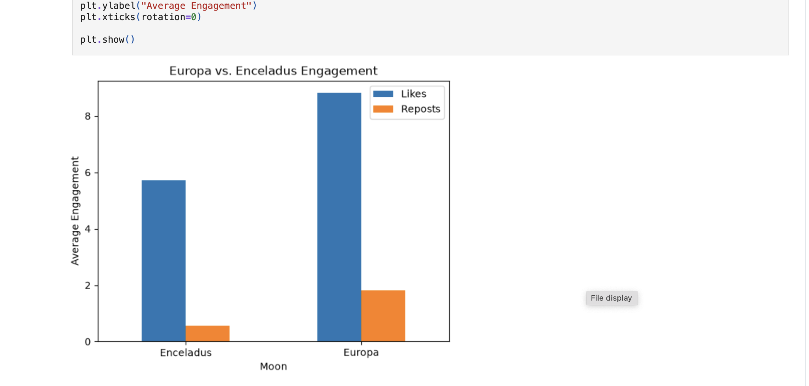
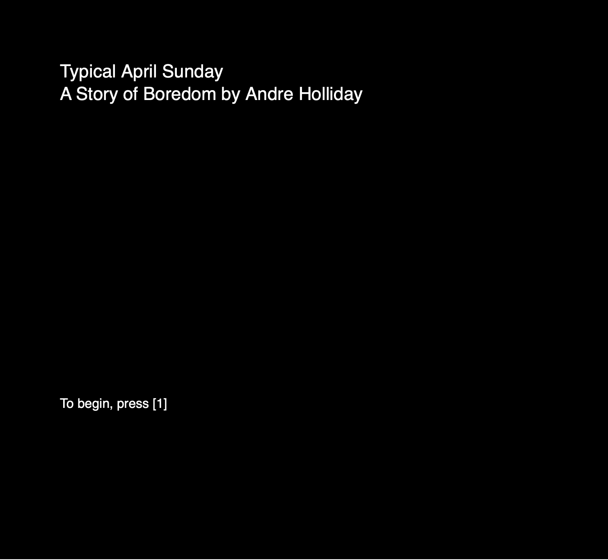

My Work
Photography
Studio photography, portraits, and digital photo editing.
Web & UI/UX Design
Interactive website design, Figma prototypes, and user-centered digital experiences.

A mobile health application prototype featuring health tracking, connected devices, workout planning, nutrition tools, and an interactive AI assistant.
Launch Vital AI PrototypeMy Story on the Web

A personal website developed for my Emerging Media and Technology coursework at Kent State University, demonstrating web design and digital communication.
Explore My WebsiteProgramming
Python programming, data analysis, and data visualization.
Video Game Genre Analysis


A Python data analysis project exploring video game sales across different genres. Uses Jupyter Notebook and visualizations to compare trends, sales, and relationships within the dataset.
View Python AnalysisEuropa vs. Enceladus — Social Media Analysis

A Python research project comparing public interest in two potentially habitable moons. Examines Bluesky posts about Europa and Enceladus to investigate differences in likes, reposts, and audience engagement.
View Europa vs. Enceladus AnalysisCreative Media
Digital storytelling, video production, and AI-powered creative projects.
Typical April Sunday: A Story of Boredom

An interactive digital story created using p5.js and JavaScript. The experience invites viewers to make choices that influence the direction of the narrative, combining creative writing with interactive programming.
Play Interactive Story